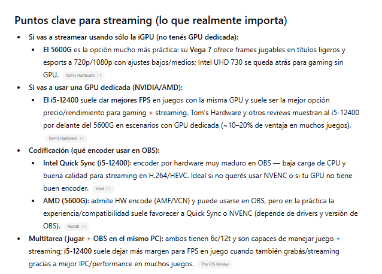
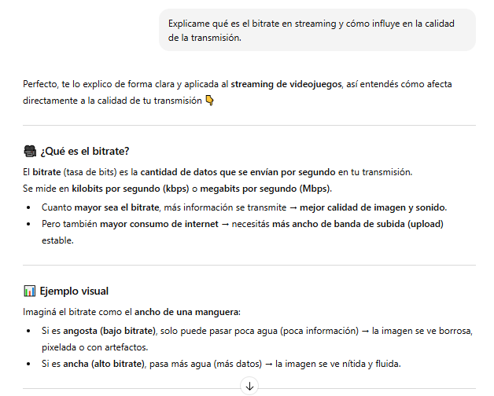
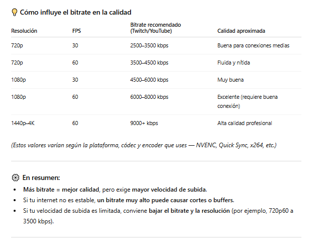

Universidad Autónoma de Entre Ríos
Facultad de Ciencia y Tecnología
Cátedra: Fundamentos de Computación
Trabajo Práctico N° 1
Tema: Streaming de Videojuegos
Estudiante: Santino Frutos
Comisión: 2 | Grupo: 69
Fecha de Entrega: 31 de octubre de 2025
Introducción
El presente informe tiene como objetivo elaborar un presupuesto individual para el armado de una computadora destinada al streaming de videojuegos, siguiendo los lineamientos del Trabajo Práctico N° 1 de la cátedra Fundamentos de Computación. Se consideran las necesidades de rendimiento tanto para ejecutar los juegos como para transmitir en vivo en plataformas populares como Twitch o YouTube Gaming, manteniendo un presupuesto máximo de 1000 USD según el tipo de cambio vigente.
1. Videojuego seleccionado
El videojuego elegido por el grupo para transmitir es Fortnite, un título multijugador en línea en el que hasta 100 jugadores compiten en una isla con el objetivo de ser el último en pie. Combina disparos en tercera persona con la construcción rápida de estructuras, lo que lo hace dinámico y visualmente atractivo para el público en plataformas de streaming.
Este juego fue seleccionado porque es popular, liviano en términos de requisitos y muy consumido por la audiencia gamer. Cada partida ofrece acción constante y momentos impredecibles, lo que lo convierte en una excelente elección para generar contenido atractivo.
2. Requerimientos técnicos de Fortnite
A continuación, se detallan los requerimientos mínimos y recomendados del juego, junto con los necesarios para realizar streaming fluido en 1080p.
| Nivel | Componente | Especificaciones |
|---|---|---|
| Mínimos | CPU | Intel Core i3-3225 3.3 GHz |
| Mínimos | RAM | 8 GB |
| Mínimos | GPU | Intel HD 4000 / AMD Radeon Vega 8 |
| Recomendados | CPU | Intel Core i5-7300U / AMD Ryzen 3 3300U |
| Recomendados | RAM | 16 GB |
| Recomendados | GPU | NVIDIA GTX 960 / AMD R9 280 |
| Para streaming 1080p | CPU | Intel i3-10100F o superior |
| Para streaming 1080p | GPU | GTX 1660 Super 6 GB VRAM |
| Para streaming 1080p | RAM | 16 GB |
3. Software de streaming utilizado
OBS Studio (Open Broadcaster Software) es el programa seleccionado para realizar la transmisión en vivo. Se trata de una herramienta gratuita, de código abierto y ampliamente utilizada por streamers en todo el mundo. Permite la configuración de escenas, fuentes de video, audio y codificadores, como NVENC o x264, para lograr una transmisión fluida y personalizable. Además, su compatibilidad con plataformas como Twitch, YouTube y Kick la convierte en una opción ideal sin costo de licencia.
4. Tipo de cambio usado
Dólar blue (venta): ARS $1.460 / USD 1 (valor tomado de la prensa actual).
5. Build A - Referencia XT-PC (componentes sueltos)
| Componente | Precio (ARS) | Precio (USD) |
|---|---|---|
| CPU - AMD Ryzen 5 5600X | $246.715,76 | $168.82 |
| GPU - GeForce RTX 3050 (ASUS DUAL OC) | $372.204,08 | $254.96 |
| Motherboard - A520 | $90.000,00 | $61.64 |
| RAM - 16 GB DDR4 | $70.000,00 | $47.95 |
| SSD NVMe 1 TB | $80.000,00 | $54.79 |
| Fuente 650W 80+ | $60.000,00 | $41.10 |
| Gabinete + ventilación | $40.000,00 | $27.40 |
Total estimado: ARS $958.919,84 - USD $657 aproximadamente
Resumen: Configuración equilibrada con procesador Ryzen 5 5600X y GPU RTX 3050, adecuada para streaming en 1080p y juegos en calidad media-alta.
6. Build B - Referencia Armytech (GPU más potente)
| Componente | Precio (ARS) | Precio (USD) |
|---|---|---|
| CPU - Ryzen 5600GT | $211.579,88 | $144.95 |
| GPU - Sapphire RX 7600 | $467.844,73 | $320.58 |
| Motherboard - A520 | $90.000,00 | $61.64 |
| RAM - 16 GB DDR4 | $70.000,00 | $47.95 |
| SSD NVMe 1 TB | $80.000,00 | $54.79 |
| Fuente 650W 80+ | $60.000,00 | $41.10 |
| Gabinete + ventilación | $40.000,00 | $27.40 |
Total estimado: ARS $1.019.424,61 - USD $698 aproximadamente
Resumen: Configuración más potente enfocada en rendimiento gráfico para juegos modernos y transmisión en alta calidad (1080p).
7. Comparación y observaciones
Ambas configuraciones cumplen con el presupuesto máximo establecido. La Build A ofrece un equilibrio entre costo y rendimiento, ideal para quienes buscan una PC versátil. Por su parte, la Build B prioriza la potencia gráfica gracias a la GPU RX 7600, resultando más adecuada para quienes priorizan el rendimiento en juegos y streaming de alta calidad.
8. Conclusión individual
En función del análisis realizado, la configuración Build B representa la mejor opción si el objetivo principal es obtener el máximo rendimiento posible dentro del presupuesto. No obstante, la Build A se mantiene como una alternativa muy equilibrada y con mayor margen para futuras mejoras. Ambas configuraciones permitirían realizar transmisiones estables a 1080p, cumpliendo los requerimientos del trabajo práctico.
9. Interacción con IA
Comparación de componentes




Reflexión sobre la comparación Ryzen 5 5600G vs Intel i5-12400
Estoy de acuerdo con la respuesta de la IA, especialmente en que la elección depende de si se usa una GPU dedicada o no. En mi caso, el presupuesto que elaboré incluye una placa de video dedicada (RTX 3050 o RX 7600), por lo que el i5-12400 sería una opción más eficiente para streaming con GPU, tal como la IA menciona. Su rendimiento por núcleo es superior y la compatibilidad con Intel Quick Sync facilita la codificación en OBS, reduciendo la carga en la CPU durante la transmisión. Sin embargo, también coincido en que, si no se cuenta con una GPU, el Ryzen 5 5600G es más conveniente por su gráfica integrada Vega 7, que permite jugar y transmitir sin necesidad de hardware adicional.
Explicación técnica traducida al "lenguaje común"



Reflexión sobre bitrate y streaming
La explicación me hizo entender que el bitrate es básicamente cuánta información manda mi PC por segundo cuando hago streaming. Es como si fuera el ancho de una manguera: si es chica, pasa poca agua y la imagen se ve fea o pixelada; si es grande, pasa más agua y la imagen se ve clara y fluida.
Esto me ayuda a entender que no siempre poner el máximo bitrate es mejor: si mi internet no aguanta, la transmisión se corta o se traba. Por eso hay que equilibrar resolución, FPS y bitrate según la velocidad de subida que tengas. También entendí que el encoder es como la "bolsa" que empaca la información, y el bitrate decide cuánta información entra en esa bolsa por segundo.
Esta explicación con IA me sirvió para ver cómo lograr un streaming que se vea bien sin que se caiga por problemas de internet, y por qué hay que ajustar el bitrate según la conexión y la resolución que quiero transmitir.
Imagen generada con IA
Prompt: "Generá una imagen de un setup de streamer gamer económico transmitiendo Fortnite desde su PC, con luces LED y micrófono."

Representa un entorno realista de transmisión pensado para un streamer principiante, coherente con el presupuesto planteado.
Reflexión sobre el uso de IA en el trabajo práctico
La inteligencia artificial resultó una herramienta valiosa durante la elaboración de este trabajo, principalmente para comparar componentes técnicos y traducir conceptos especializados a un lenguaje más accesible. Me permitió comprender mejor términos como bitrate, encoder y las diferencias entre procesadores, lo que facilitó la toma de decisiones informadas sobre qué configuración elegir.
Sin embargo, identifiqué ciertas limitaciones importantes. Los precios de hardware cambian constantemente en Argentina, y la IA no siempre cuenta con información actualizada sobre disponibilidad local o variaciones del dólar. Además, noté que para validar compatibilidades específicas entre componentes (como motherboards y tipos de RAM), fue necesario contrastar con fuentes especializadas, ya que la IA puede generalizar o no contemplar detalles técnicos regionales.
En conclusión, la IA funcionó como un excelente asistente para aprender y organizar información, pero no reemplaza la investigación directa en tiendas locales ni el criterio propio a la hora de armar un presupuesto real. Combinar ambos enfoques resultó la estrategia más efectiva.
Fuentes consultadas
- XT-PC - Listados de componentes y precios (www.xt-pc.com.ar)
- Armytech - Listados de hardware (www.armytech.com.ar)
- La Nación / Ámbito - Cotización del dólar blue (ARS $1.460)
- OBS Studio - Software libre para streaming (obsproject.com)